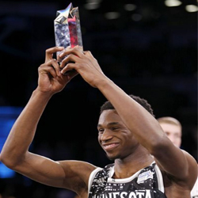

Rookie of the Year

Andrew Wiggans, Minnesota Timberwolves, This years Winner!!
| YEAR |
PLAYER(S) |
TEAM |
| 2013-14 |
Michael Carter-Williams |
Philadelphia 76ers |
| 2012-13 |
Damian Lillard |
Portland Trail Blazers |
| 2011-12 |
Kyrie Irving |
Cleveland Cavaliers |
| 2010-11 |
Blake Griffin |
Los Angeles Clippers |
| 2009-10 |
Tyreke Evans |
Sacramento Kings |
| 2008-09 |
Derrick Rose |
Chicago Bulls |
| 2007-08 |
Kevin Durant |
Seattle SuperSonics |
| 2006-07 |
Brandon Roy |
Portland Trail Blazers |
| 2005-06 |
Chris Paul |
New Orleans/Oklahoma City Hornets |
| 2004-05 |
Emeka Okafor |
Charlotte Bobcats |
| 2003-04 |
LeBron James |
Cleveland Cavaliers |
| 2002-03 |
Amar'e Stoudemire |
Phoenix Suns |
| 2001-02 |
Pau Gasol |
Memphis Grizzlies |
| 2000-01 |
Mike Miller |
Orlando Magic |
| 1999-00 |
Steve Francis, Elton Brand |
Houston Rockets, Chicago Bulls |
| 1998-99 |
Vince Carter |
Toronto Raptors |
| 1997-98 |
Tim Duncan |
San Antonio Spurs |
| 1996-97 |
Allen Iverson |
Philadelphia 76ers |
| 1995-96 |
Damon Stoudamire |
Toronto Raptors |
| 1994-95 |
Jason Kidd, Grant Hill |
Dallas Mavericks, Detroit Pistons |
| 1993-94 |
Chris Webber |
Golden State Warriors |
| 1992-93 |
Shaquille O'Neal |
Orlando Magic |
| 1991-92 |
Larry Johnson |
Charlotte Hornets |
| 1990-91 |
Derrick Coleman |
New Jersey Nets |
| 1989-90 |
David Robinson |
San Antonio Spurs |
| 1988-89 |
Mitch Richmond |
Golden State Warriors |
| 1987-88 |
Mark Jackson |
New York Knicks |
| 1986-87 |
Chuck Person |
Indiana Pacers |
| 1985-86 |
Patrick Ewing |
New York Knicks |
| 1984-85 |
Michael Jordan |
Chicago Bulls |
| 1983-84 |
Ralph Sampson |
Houston Rockets |
| 1982-83 |
Terry Cummings |
San Diego Clippers |
| 1981-82 |
Buck Williams |
New Jersey Nets |
| 1980-81 |
Darrell Griffith |
Utah Jazz |
| 1979-80 |
Larry Bird |
Boston Celtics |
| 1978-79 |
Phil Ford |
Kansas City Kings |
| 1977-78 |
Walter Davis |
Phoenix Suns |
| 1976-77 |
Adrian Dantley |
Buffalo Braves |
| 1975-76 |
Alvan Adams |
Phoenix Suns |
| 1974-75 |
Jamaal Wilkes |
Golden State Warriors |
| 1973-74 |
Ernie DiGregorio |
Buffalo Braves |
| 1972-73 |
Bob McAdoo |
Buffalo Braves |
| 1971-72 |
Sidney Wicks |
Portland Trail Blazers |
| 1970-71 |
Geoff Petrie, Dave Cowens |
Portland Trail Blazers, Boston Celtics |
| 1969-70 |
Lew Alcindor |
Milwaukee Bucks |
| 1968-69 |
Wes Unseld |
Baltimore Bullets |
| 1967-68 |
Earl Monroe |
Baltimore Bullets |
| 1966-67 |
Dave Bing |
Detroit Pistons |
| 1965-66 |
Rick Barry |
San Francisco Warriors |
| 1964-65 |
Willis Reed |
New York Knicks |
| 1963-64 |
Jerry Lucas |
Cincinnati Royals |
| 1962-63 |
Terry Dischinger |
Chicago Zephyrs |
| 1961-62 |
Walt Bellamy |
Chicago Packers |
| 1960-61 |
Oscar Robertson |
Cincinnati Royals |
| 1959-60 |
Wilt Chamberlain |
Philadelphia Warriors |
| 1958-59 |
Elgin Baylor |
Minneapolis Lakers |
| 1957-58 |
Wood Sauldsberry |
Philadelphia Warriors |
| 1956-57 |
Tom Heinsohn |
Boston Celtics |
| 1955-56 |
Maurice Stokes |
Rochester Royals |
| 1954-55 |
Bob Pettit |
Milwaukee Hawks |
| 1953-54 |
Ray Felix |
Baltimore Bullets |
| 1952-53 |
Don Meineke |
Fort Wayne Pistons |
|